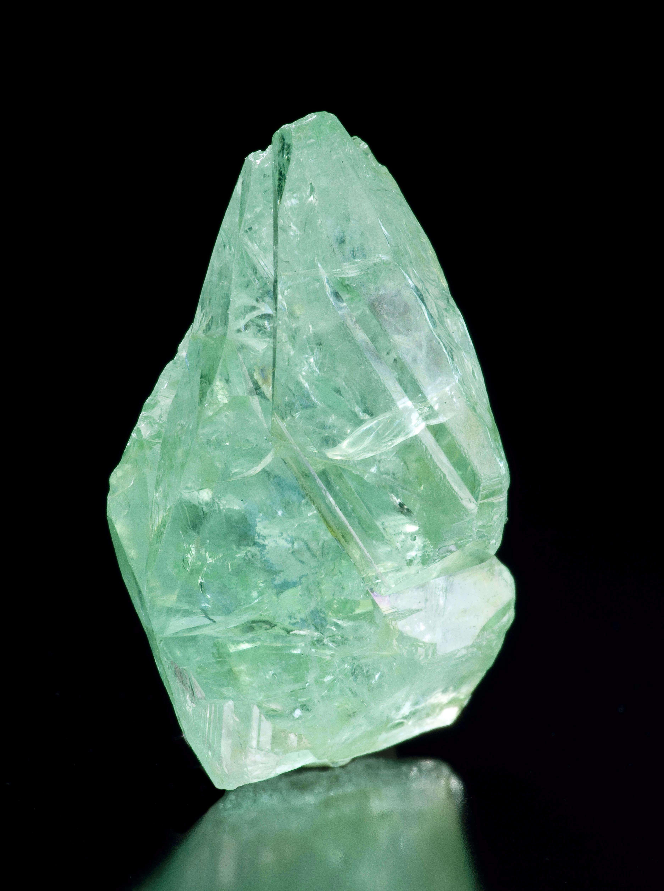
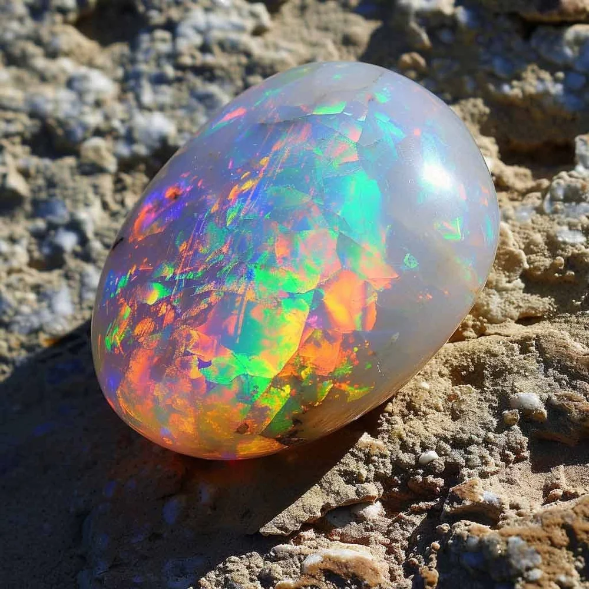
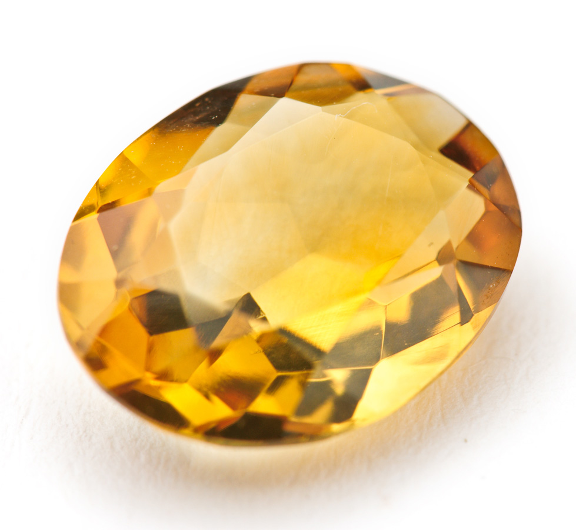
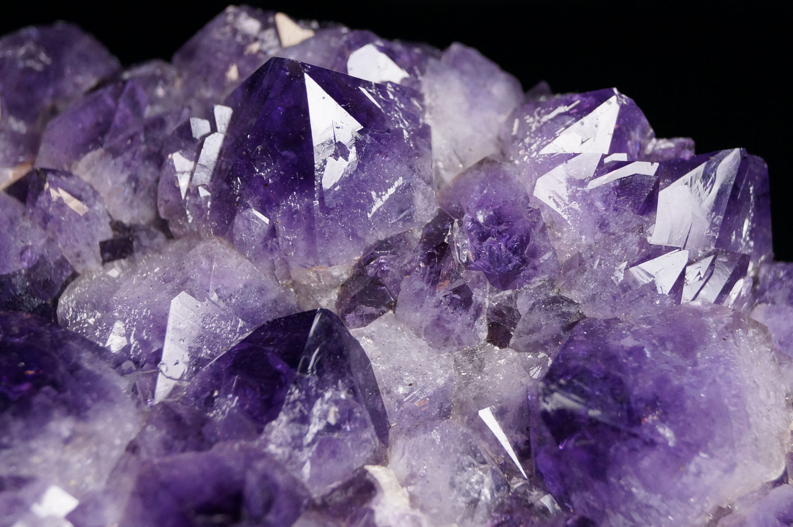
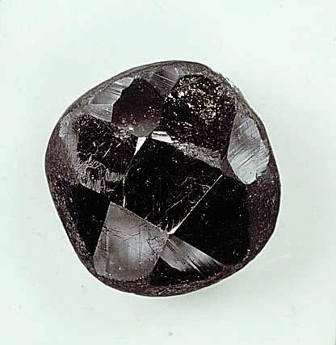
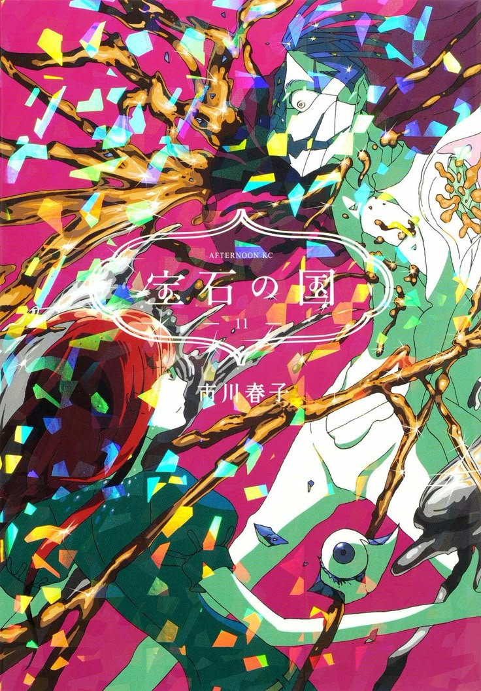

Hello, I'm Emma Mason. I'm a current First Year student at MSU, and am double majoring in both English and Games & Interactive Media. I also plan on pursuing a concentration in Creative Writing with an minor in Japanese. I'm currently a member of MSU Splatoon 3 Esports team, and also perform for MSU's concert band, in which I play the flute. When I am not heading out to practice my flute, I can most often be found drawing, reading or, most likely, studying. I'm a massive horror game fan, with some of my favorite titles being that of Look Outside and The Outlast Trials. As I have an immense love of the genre of horror, my art has been heavily influenced by horror-related elements, leaving my style to be based within that of body horror. However, one of my greatest interests is that of collecting gemstones. It has been a hobby of mine since I was quite a small child, and I have found immense joy in it. Due to this joy, I have obtained a plethora of information regarding gemstones, and am always ready to share that information whenever possible.
The Mohs hardness scale, developed in 1812 by German mineralogist Friedrich Mohs, is the standard method for measuring the hardness or softeness of minerals and gemstones. It is a quantative scale, ranging from 1 to 10. On the scale, 1 represents the the softests of minerals, particularly that of Talc, while 10 represents the hardest of minerals, namely that of Diamonds. The scale is an incredibly easy system to use, and which has created great ease for geologists and gemologists in identifying certain minerals. However, while the scale is incredibly easy to use and is a standard within the field of mineralogy, many non-gemstone collectors are unaware of the scale. Indeed, many are not even aware where there favorite gemstones fall within the scale of hardness and softness.
As previously mentioned, the Mohs hardness scale goes from 1 to 10, with 1 representing the softest of minerals and 10 representing the hardest of minerals. The softer minerals, such as that of Talc, with has the lowest known hardness of one, are incredibly easy to break or scratch, due to their softness. This can also be seen in opals which, as yet another incredibly soft mineral, frequently scratch when set in jewelery. Diamonds, on the other hand, are the hardest of minerals within the scale, and thus rarely scratch or break. Still, Diamonds can break when immense pressure is applied to a Diamond's weaker planes. The hardest of minerals, ranked at 10 on the hardness scale, are also capable to scratching or breaking all other minerals. Furthermore, the scale is also arranged in order of which common object can scratch a certain mineral. For instance, the softest mineral Talc, with a hardness of 1, can easily be scratched by a mere fingernail. Meanwhile, Diamonds cannot truly be scratched by anything easily, other than other Diamonds.
Below is a list of my top 5 favorite gemstones. They are from every single part of the Mohs Hardness Scale and, hopefully, represent somethng a new discovery for readers. Please note that the below gemstones are listed by increasing Mohs hardness, not my personal feelings regarding each mineral. That said, my favorite gemstone within the below list is that of Citrine!
Phosphophyllite, with a Mohs hardness scale of two, is certainly one of my more favored gemstones. This mineral, coming in as one of the softest (if not the single softest) gemstone on this list, is one the only stones in existence that can be scratched by a human fingernail, and easily broken by a human hand. This stone has a pleasant teal hue, which the mineral is quite well known for.

Opal, with a Mohs hardness scale of 5, is one of the scale’s more soft minerals. Opal can easily be scratched and often requires extra care when being handled or placed into jewelry, as the stone is liable to break. This stone, while often coming in shades of white, can also come in a “fire opal” variety, in which the mineral’s shimmer is incredibly intense and prominent.

Citrine, with a Mohs hardness scale of 7, is one of the scale’s hardest minerals. Citrine cannot easily be scratched and is often used as pendants within jewelry making. While the mineral is highly common, it does have intriguing variants, such as that of the “Honey Citrine.” This variant possesses the standard Citrine colorings while also having a honey-like appearance, often seeming to possess a milky film.

Amethyst, with a Mohs hardness scale of 7, is one of the scale’s harder minerals. Amethyst cannot easily be scratched, and is thus used commonly within jewelry making and other industrial workings. Thanks to the mineral’s dark color scheme, inclusions can easily be seen within the stone. The most common of these inclusions is that of calcite, which is a large, white mineral that protrudes from amethysts.

Bort, with a Mohs hardness scale of roughly 10, is the scale’s hardest mineral, ranking at or above Diamond. Bort is considered to be a “low quality” mineral, and is thus only seen in industry use, and is not employed when making jewelry. The mineral is often considered to be an offshoot of, or a direct byproduct of the creation of Diamonds, with Bort being considered to be an “imperfect” Diamond.


While there aren’t many true depictions of gemstones in media, many modern television shows have incorporated gemstones in their character designs and overall concept. One of the more well known examples of this, which just happens to be one of my favorite shows of all time, is that of “Houseki no Kuni” (Land of the Lustrous). All of the characters within this show are directly based upon real-world minerals, with every single character also having a realistic associated Mohs hardness that correlates to their respective mineral character designs. The show is based heavily around gemology, even going in depth around gemstone inclusions (suspended material within minerals) and the process of polishing gems. Most interestingly, the characters within Houseki no Kuni are forced to fight off invaders, who are trying to steal the gems to make jewelry, leaving the gem’s Mohs hardness to play a massive role in each of the series’s battles, as the softer gemstones are unable to properly fight (due to fear of breaking), which plays into that ultimate downfall of the series’ main character: Phosphophyllite. While Houseki no Kuni does currenlty have an anime adaptation, which is presently watchable on Crunchyroll, it has been dropped as a show. The manga, which had a complete, 12-issue run, is no longer updating, though is certainly a wonderful read.
Below are a series of links to further information regarding gemology and mineralogy. They reprsent either further information on some of my more favored stones, or showcase brand new information to spark further study and research on the topic of gemstones. Of them, the GIA is one of my more favored websites, as it lists basic compound information on numerous gemstones while also showcasing polished and unpolished varients of the stone, which I find to be highly intriguing, as most stones people see are already pre-cut and fully polished.